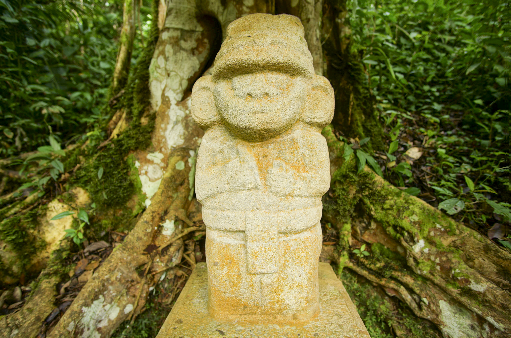
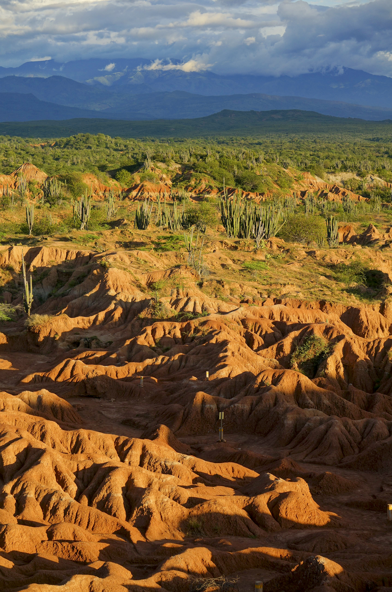

San Agustín - Tatacoa
Juni 13, 2018
Colombia – Epic Journey 2016-2018 Part XVII – Last Part
San Agustín
For almost a week now, we have been enjoying the beautiful San Agustín in southern Colombia, which is composed of picturesque mountain and river landscapes wrapped in coffee bushes. The weather is adding to the beauty, as sun, clouds and rain showers conjure up a surreal play of light and shadow on the lush green hills.
We have rented a small guest room in the town. From here, we explore San Agustin's surroundings on foot. We hike through the deep gorges of the Rio Magdalena which flows right across Colombia before pouring into the Caribbean Sea in Barranquilla, just three hours from Palomino. We marvel at the many picturesque waterfalls, including the Salto del Mortiño, which plunges 100 meters into the depths.